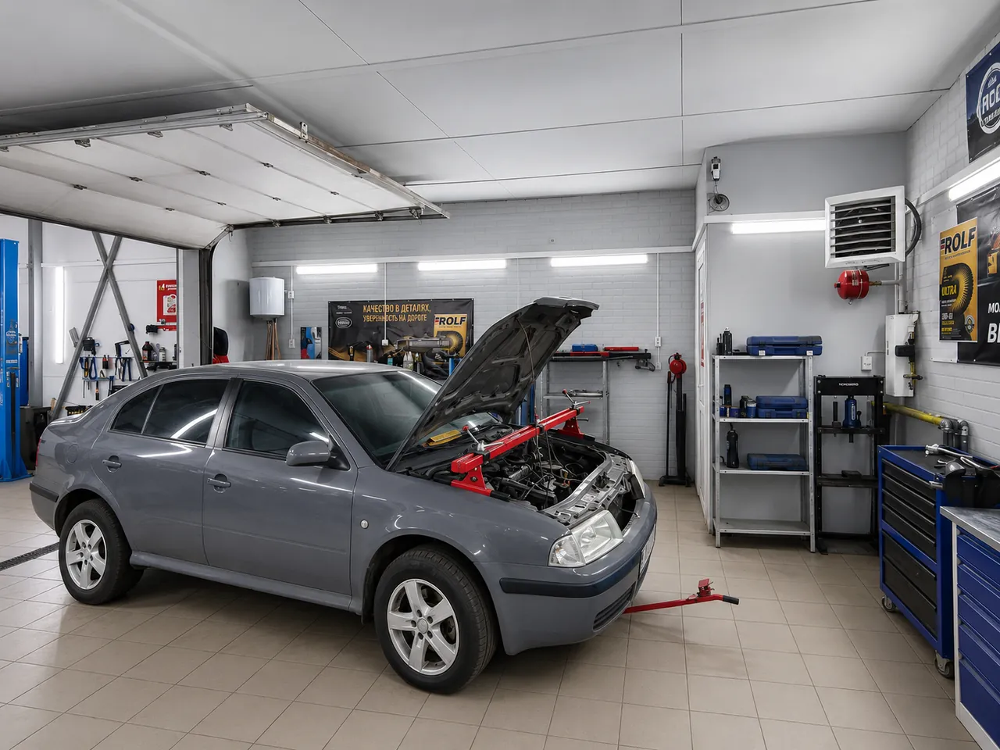

Результат диагностики
Что проверили, какие признаки нашли и почему предложен конкретный следующий шаг.
Конкретный срок гарантии не указан без подтверждения собственником. На этой странице — порядок, который помогает заранее понять объём работ, условия и способ проверки результата.
До ремонта
Перечень зависит от задачи, но клиенту важно понимать причину, предлагаемые действия и финансовую рамку до начала соответствующей работы.
Что проверили, какие признаки нашли и почему предложен конкретный следующий шаг.
Какие операции необходимы сейчас, а какие относятся к рекомендациям на будущее.
Наименование, совместимость, выбранный вариант и стоимость до заказа или установки.
Работы, детали и возможные условия, при которых расчёт может измениться.
Новая неисправность не должна выполняться автоматически — её сначала обсуждают.
Как будет проверено устранение исходного симптома после выполнения работ.
Документы
Состав выдаваемых документов требует подтверждения собственником. До начала работ спросите, где будут отражены перечень, запчасти, стоимость и применимые гарантийные условия.

Дополнительные работы
При разборке может открыться состояние деталей, которое нельзя было увидеть при первичной проверке. В таком случае сервис описывает находку, объясняет влияние на исходную задачу и сообщает изменение расчёта.
У клиента должна оставаться возможность согласовать дополнительный объём, выбрать вариант или отложить рекомендуемую работу, если это допустимо с точки зрения безопасной эксплуатации.
Без неподтверждённых обещаний
Единый срок на сайте не публикуется: он не подтверждён исходными данными. Применимые условия следует уточнить до ремонта и зафиксировать в документах по конкретной работе и детали.
На разные виды работ, новые или предоставленные клиентом запчасти, расходные материалы и дефектовку могут действовать разные условия. Важно получить ответ применительно к своему заказу.
Связаться с сервисом, назвать дату визита, автомобиль, выполненные работы и обстоятельства повторного проявления. До самостоятельного вмешательства лучше согласовать порядок проверки.
Сервис объясняет находку и согласует состав и стоимость до выполнения. Исключение могут составлять только действия, необходимые для безопасной остановки работы, но они также требуют понятного объяснения.
Опишите задачу и задайте вопросы о диагностике, документах и условиях конкретной работы.